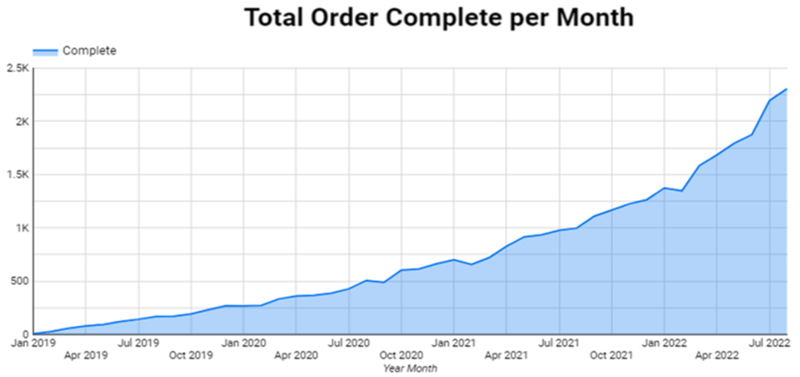
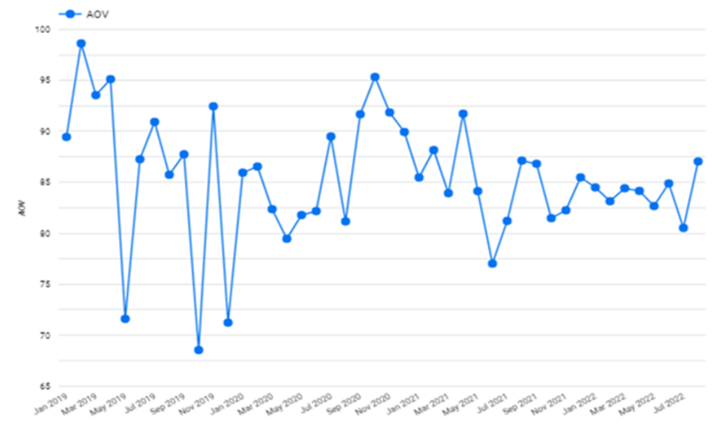
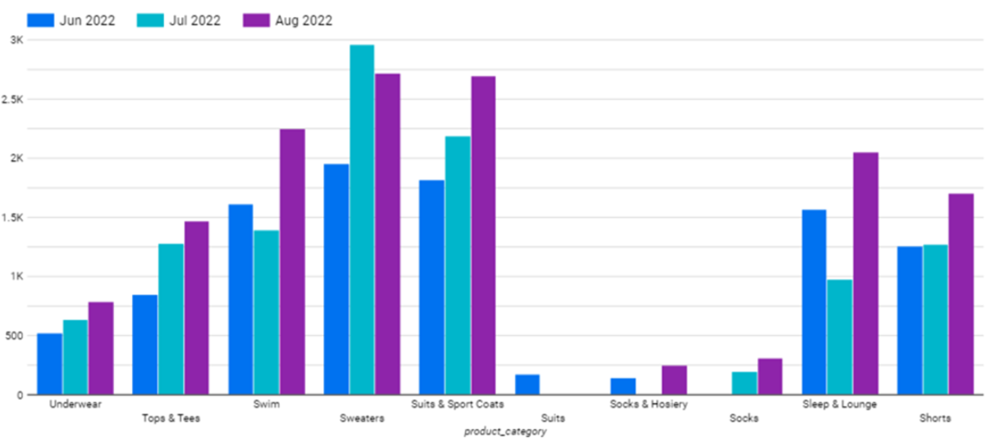
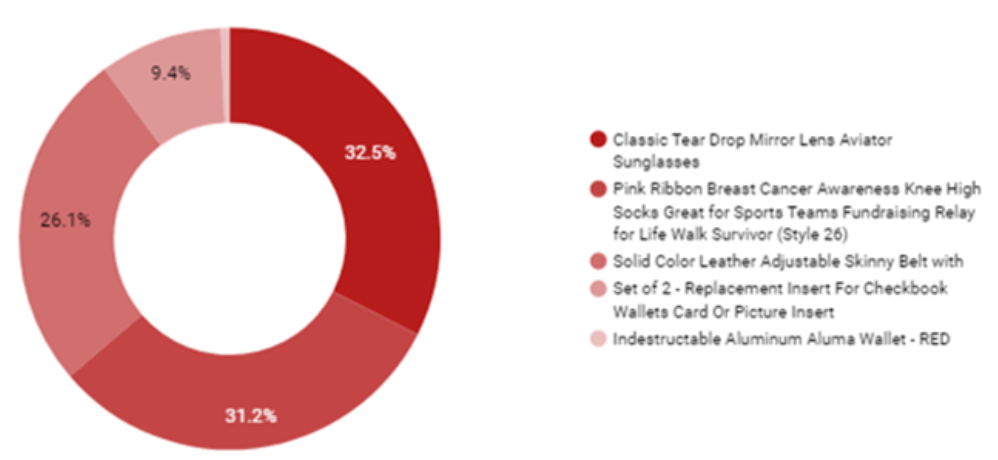
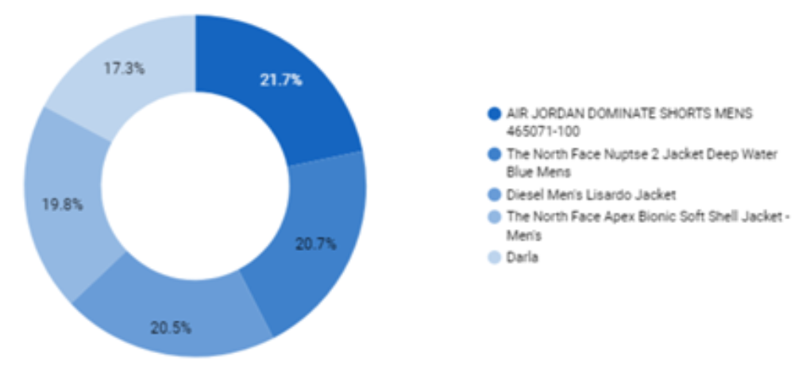
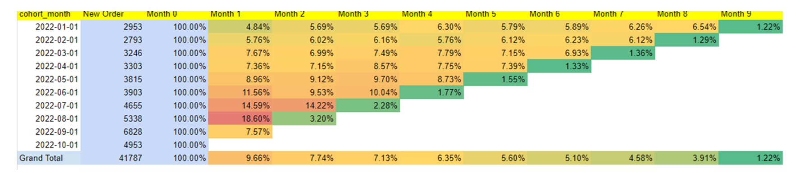
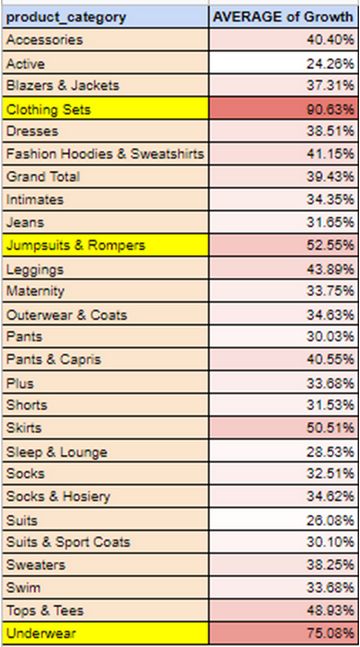

The Look E-Commerce Analysis
BACKThe Look E-Commerce Analysis
Skillset: SQL, Google Data Studio
The look Commerce is a new developed start up, as a new developed start up, the main goals of the look commerce is to monitori user and order activities.
In order to have a good monitoring result the look commerce wanted to do an end to end analysis starting from order and user growth and trace those user activities thorugh months using cohort analysis.
- How many total orders are completed each month?
- How many average order each month?
- Get top 5 least and most profitable product over all time
The purpose of this is to provide an analysis of the sales growth of e-commerce clothing

It can be seen that the total completed orders grew significantly every month from 2019-2020

The chart above shows that the highest average order occured in March 2019 and the lowest average order in November 2019

With the exception of sweaters, which show a decrease from July to August 2022, as well as the Swim and Sleep & Lounge categories decreasing from June to July 2022, almost all product categories show an increase in profit from June to August 2022.

The data provided represents the percentage top 5 unprofitable product for various products. According to the information given, classic tear drop mirror lens aviator sunglasses 32,5% being the least purchased product
These percentages provide insight into which products are unprofitable product the most and how they contribute to the overall sales of the company.

The data provided represents the percentage top 5 profitble product for various products. According to the information given, Air Jordan Dominate Shorts Mens make up 21.7% of total sales and the lowest Darla products make up 17.35% of total sales.
These percentages provide insight into which products are selling the most and how they contribute to the overall sales of the company.

Insight &Recommendation
- The total number of new users slightly increased from 2953 in January 2022 to 4953 in the beginning of October 2022.
- In September 2022, the retention rate decrease to 7.57% from the previous month caused by incomplete dataset in October 2022.
- August 2022 became the highest retention rate in the first month at 18.60%.
- Out of all of the new users during this time range (41787 users), 9.66% users are retained on month 1 that means about 90% of customers do not place an order after the first month.
- TheLook Ecommerce should increase user engagement and retention by sending notifications about products they've searched for. Include a statement that purchasing the product now will result in cashback or points.
- To increase sales for products in the active category with clearance sales during high seasons like summer holidays or payday sales.
- Another suggestion for increasing active category sales is to combine it with the best-selling product.

- On average, the top 3 highest categories of inventory growth (per month) is Clothing Sets (90.63%), Underwear (75.08%), and Jumpsuits & Rompers (52.55%) during January 2019 till April 2022.
- During January 2019 till April 2022, the category of clothing sets has become the best-selling product on The Look Ecommerce and the product that did not sell well was in the Active category with 24.26%. More promotion and campaign needs to be done for products whose growth is below 30%.